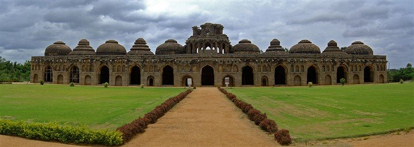
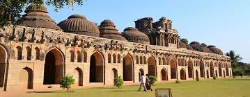

The Elephant Stable in Hampi is an impressive structure that was used to provide shelter for the royal elephants of the Vijayanagara Empire. The elephant stable is located in the area that lies just outside the Zenana Enclosure.
It is one of the very few structures that have not suffered extensive damage during the Mughal attack on Hampi that led to the downfall of the Vijayanagara Empire in 1565 A.D. The ancient stable is a major attraction among the tourists even today.
History of Elephant Stable, Hampi
The elephant stable was constructed in the 15th century, during the reign of the Vijayanagara Empire. As the name indicates, the stable was constructed to house the royal elephants of the Vijayanagara Empire.
The elaborate structure indicates the importance attached to the royal elephants during those days. It also suggests towards the amazing craftsmanship of the artisans of that era.
Impressive Architecture of Elephant Stable, Hampi
The elephant stable in Hampi is one of the finest examples of Indo-Islamic style of architecture. Though most of the structures and monuments in Hampi were built using the Vijayanagara style of architecture, a few structures display the Indo-Islamic style as well.

